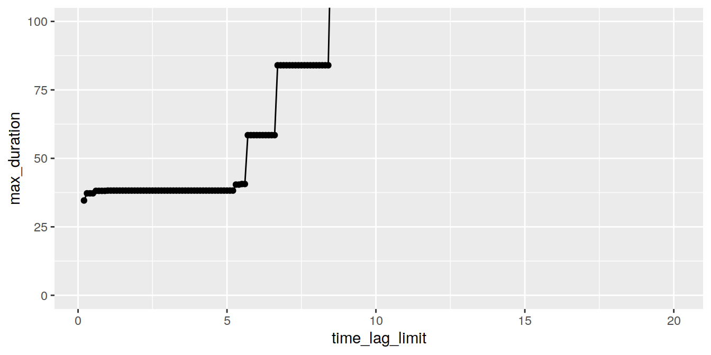
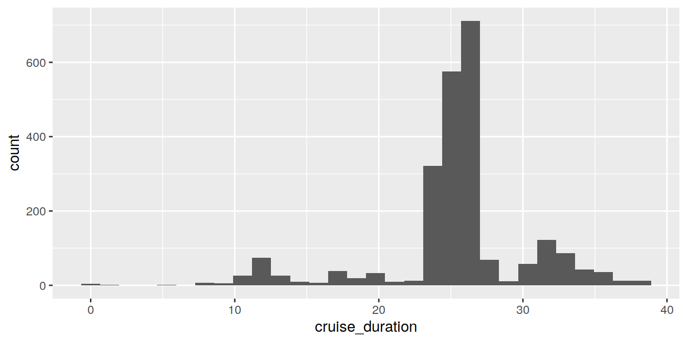
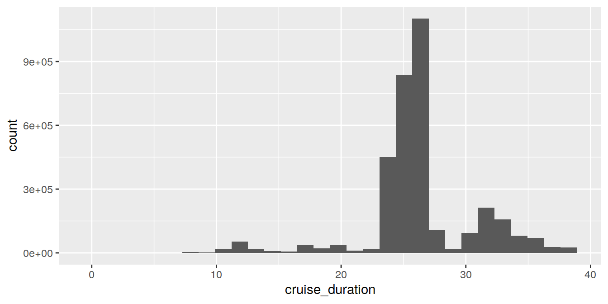

Last updated: 2021-09-23
Checks: 7 0
Knit directory: SOCAT_data_extraction/
This reproducible R Markdown analysis was created with workflowr (version 1.6.2). The Checks tab describes the reproducibility checks that were applied when the results were created. The Past versions tab lists the development history.
Great! Since the R Markdown file has been committed to the Git repository, you know the exact version of the code that produced these results.
Great job! The global environment was empty. Objects defined in the global environment can affect the analysis in your R Markdown file in unknown ways. For reproduciblity it’s best to always run the code in an empty environment.
The command set.seed(20210714) was run prior to running the code in the R Markdown file. Setting a seed ensures that any results that rely on randomness, e.g. subsampling or permutations, are reproducible.
Great job! Recording the operating system, R version, and package versions is critical for reproducibility.
Nice! There were no cached chunks for this analysis, so you can be confident that you successfully produced the results during this run.
Great job! Using relative paths to the files within your workflowr project makes it easier to run your code on other machines.
Great! You are using Git for version control. Tracking code development and connecting the code version to the results is critical for reproducibility.
The results in this page were generated with repository version ec6a999. See the Past versions tab to see a history of the changes made to the R Markdown and HTML files.
Note that you need to be careful to ensure that all relevant files for the analysis have been committed to Git prior to generating the results (you can use wflow_publish or wflow_git_commit). workflowr only checks the R Markdown file, but you know if there are other scripts or data files that it depends on. Below is the status of the Git repository when the results were generated:
Ignored files:
Ignored: .Rhistory
Ignored: .Rproj.user/
Ignored: data/
Ignored: output/
Note that any generated files, e.g. HTML, png, CSS, etc., are not included in this status report because it is ok for generated content to have uncommitted changes.
These are the previous versions of the repository in which changes were made to the R Markdown (analysis/read_SOCAT_synthesis_files_Finnmaid.Rmd) and HTML (docs/read_SOCAT_synthesis_files_Finnmaid.html) files. If you’ve configured a remote Git repository (see ?wflow_git_remote), click on the hyperlinks in the table below to view the files as they were in that past version.
| File | Version | Author | Date | Message |
|---|---|---|---|---|
| Rmd | ec6a999 | jens-daniel-mueller | 2021-09-23 | rebuild with EGS time series |
| html | 7c002b5 | jens-daniel-mueller | 2021-07-14 | Build site. |
| Rmd | 6291613 | jens-daniel-mueller | 2021-07-14 | clean up scripts |
| html | 14b501e | jens-daniel-mueller | 2021-07-14 | Build site. |
| Rmd | 6d78d0a | jens-daniel-mueller | 2021-07-14 | read finnmaid data |
| html | c859187 | jens-daniel-mueller | 2021-07-14 | Build site. |
| html | 46c8eba | jens-daniel-mueller | 2021-07-14 | Build site. |
| Rmd | dd2ef2b | jens-daniel-mueller | 2021-07-14 | read finnmaid data |
| html | dd2ef2b | jens-daniel-mueller | 2021-07-14 | read finnmaid data |
| html | 8878c9a | jens-daniel-mueller | 2021-07-14 | Build site. |
| Rmd | 766c448 | jens-daniel-mueller | 2021-07-14 | XXX |
── Attaching packages ─────────────────────────────────────── tidyverse 1.3.0 ──✓ ggplot2 3.3.5 ✓ purrr 0.3.4
✓ tibble 3.1.3 ✓ dplyr 1.0.5
✓ tidyr 1.1.3 ✓ stringr 1.4.0
✓ readr 1.4.0 ✓ forcats 0.5.0── Conflicts ────────────────────────────────────────── tidyverse_conflicts() ──
x dplyr::filter() masks stats::filter()
x dplyr::lag() masks stats::lag()path_SOCAT <- "/nfs/kryo/work/updata/socat/"
print(path_SOCAT)[1] "/nfs/kryo/work/updata/socat/"# define file names
file_all <- "SOCATv2021.tsv"
file_FlagE <- "SOCATv2021_FlagE.tsv"
# # create file with SOCAT header
# header <- read_lines(
# file = paste0(path_SOCAT, file_all),
# n_max = 7000
# )
#
# header %>%
# write_lines(here::here("data/",
# "SOCATv2021_header.txt"))
# Determine DOI with Finnmaid/Finnpartner data in regular synthesis file
# and read only those data
meta <- read_delim(
file = paste0(path_SOCAT, file_all),
"\t",
escape_double = FALSE,
trim_ws = TRUE,
skip = 4,
n_max = 6564
)
── Column specification ────────────────────────────────────────────────────────
cols(
Expocode = col_character(),
version = col_character(),
`Dataset Name` = col_character(),
`Platform Name` = col_character(),
`PI(s)` = col_character(),
`Data Source DOI` = col_character(),
`Data Source Reference` = col_character(),
`Westmost Longitude` = col_character(),
`Eastmost Longitude` = col_character(),
`Southmost Latitude` = col_character(),
`Northmost Latitude` = col_character(),
`Start Time` = col_date(format = ""),
`End Time` = col_date(format = ""),
`QC Flag` = col_character(),
`Additional Metadata Document(s)` = col_character()
)meta <- meta %>%
filter(str_detect(`Platform Name`, "Finn"))
Finn_Expocodes <- meta$Expocode
f_subset <-
function(x, pos) subset(x, Expocode %in% Finn_Expocodes)
SOCAT_Finn <-
read_tsv_chunked(
file = paste0(path_SOCAT, file_all),
skip = 6623,
DataFrameCallback$new(f_subset),
chunk_size = 100000
)
── Column specification ────────────────────────────────────────────────────────
cols(
.default = col_double(),
Expocode = col_character(),
version = col_character(),
Source_DOI = col_character(),
QC_Flag = col_character(),
mon = col_character(),
mm = col_character(),
ss = col_character()
)
ℹ Use `spec()` for the full column specifications.rm(meta, Finn_Expocodes)
# Determine DOI with Finnmaid/Finnpartner data in flag E synthesis file
# and read only those data
meta <- read_delim(
file = paste0(path_SOCAT, file_FlagE),
"\t",
escape_double = FALSE,
trim_ws = TRUE,
skip = 4,
n_max = 194
)
── Column specification ────────────────────────────────────────────────────────
cols(
Expocode = col_character(),
version = col_character(),
`Dataset Name` = col_character(),
`Platform Name` = col_character(),
`PI(s)` = col_character(),
`Data Source DOI` = col_character(),
`Data Source Reference` = col_character(),
`Westmost Longitude` = col_character(),
`Eastmost Longitude` = col_character(),
`Southmost Latitude` = col_character(),
`Northmost Latitude` = col_character(),
`Start Time` = col_date(format = ""),
`End Time` = col_date(format = ""),
`QC Flag` = col_character(),
`Additional Metadata Document(s)` = col_character()
)meta <- meta %>%
filter(`Platform Name` %in% c("Finnmaid", "VOS Finnpartner"))
Finn_Expocodes <- meta$Expocode
SOCAT_Finn_E <-
read_tsv_chunked(
file = paste0(path_SOCAT, file_FlagE),
skip = 251,
DataFrameCallback$new(f_subset),
chunk_size = 100000
)
── Column specification ────────────────────────────────────────────────────────
cols(
.default = col_double(),
Expocode = col_character(),
version = col_character(),
Source_DOI = col_character(),
QC_Flag = col_character(),
mon = col_character(),
day = col_character(),
hh = col_character(),
mm = col_character(),
ss = col_character()
)
ℹ Use `spec()` for the full column specifications.rm(f_subset, meta, Finn_Expocodes)
# Merge data from regular and flag E synthesis file
SOCAT_Finn <-
bind_rows(SOCAT_Finn %>% mutate(across(yr:ss, as.character)),
SOCAT_Finn_E %>% mutate(across(yr:ss, as.character)))
rm(SOCAT_Finn_E)
# rename and subset columns
SOCAT_Finn <- SOCAT_Finn %>%
rename("lon" = "longitude [dec.deg.E]",
"lat" = "latitude [dec.deg.N]",
"fCO2" = "fCO2rec [uatm]",
"SST" = "SST [deg.C]") %>%
mutate(date_time = lubridate::ymd_hms(paste(yr, mon, day, hh, mm, ss))) %>%
select(date_time, yr, mon, lon, lat, sal, SST, fCO2)
# Plot time series to check read-in procedure
SOCAT_Finn %>%
filter(lat > 59, lat < 59.05) %>%
ggplot(aes(date_time, fCO2, col=SST))+
geom_point()+
scale_color_viridis_c()+
labs(x="", y="fCO2", title = "Finnpartner / Finnmaid data",
subtitle = "Subsets from SOCATv2021 incl Flag E | Lat range: 59-59.05N")+
theme_bw()
| Version | Author | Date |
|---|---|---|
| 46c8eba | jens-daniel-mueller | 2021-07-14 |
In order to identify cruises, we determine a threshold for the time lag between observations.
for (time_lag_limit in seq(0.2, 20, 0.1)*60^2) {
# print(time_lag_limit/60^2)
SOCAT_Finn <- SOCAT_Finn %>%
arrange(date_time) %>%
mutate(cruise = cumsum(c(TRUE, diff(date_time) >= time_lag_limit)))
cruise_duration <- SOCAT_Finn %>%
group_by(cruise) %>%
summarise(cruise_duration =
as.numeric(difftime(max(date_time), min(date_time), units = "hours"))) %>%
summarise(min_duration = min(cruise_duration),
max_duration = max(cruise_duration))
cruise_counts_temp <- bind_cols(
time_lag_limit = time_lag_limit/60^2,
n_cruises = max(SOCAT_Finn$cruise)
)
cruise_counts_temp <- bind_cols(
cruise_counts_temp,
cruise_duration
)
if (exists("cruise_counts")) {
cruise_counts <- bind_rows(cruise_counts, cruise_counts_temp)
}
if (!exists("cruise_counts")) {
cruise_counts <- cruise_counts_temp
}
}
cruise_counts %>%
ggplot(aes(time_lag_limit, n_cruises)) +
geom_path() +
geom_point()
cruise_counts %>%
ggplot(aes(time_lag_limit, max_duration)) +
geom_path() +
geom_point() +
coord_cartesian(ylim = c(0,100))
cruise_counts %>%
ggplot(aes(time_lag_limit, min_duration)) +
geom_path() +
geom_point() +
coord_cartesian(ylim = c(0, 1))
rm(cruise_counts, cruise_counts_temp, cruise_duration)
for (time_lag_limit in seq(2, 8, 2)*60^2) {
# print(time_lag_limit/60^2)
SOCAT_Finn <- SOCAT_Finn %>%
arrange(date_time) %>%
mutate(cruise = cumsum(c(TRUE, diff(date_time) >= time_lag_limit)))
cruise_duration <- SOCAT_Finn %>%
group_by(cruise) %>%
summarise(cruise_duration =
as.numeric(difftime(max(date_time), min(date_time), units = "hours")))
cruise_counts_temp <- bind_cols(
time_lag_limit = time_lag_limit/60^2,
n_cruises = max(SOCAT_Finn$cruise)
)
cruise_counts_temp <- bind_cols(
cruise_counts_temp,
cruise_duration
)
if (exists("cruise_counts")) {
cruise_counts <- bind_rows(cruise_counts, cruise_counts_temp)
}
if (!exists("cruise_counts")) {
cruise_counts <- cruise_counts_temp
}
}
cruise_counts %>%
ggplot(aes(as.factor(time_lag_limit), cruise_duration)) +
geom_violin()
# set time lag to cut cruises
time_lag_limit <- 5*60^2
print(paste("Choosen time lag [hrs]:", time_lag_limit/60^2))[1] "Choosen time lag [hrs]: 5"SOCAT_Finn <- SOCAT_Finn %>%
arrange(date_time) %>%
mutate(cruise = cumsum(c(TRUE, diff(date_time) >= time_lag_limit)))
cruise_duration <- SOCAT_Finn %>%
group_by(cruise) %>%
summarise(cruise_duration =
as.numeric(difftime(max(date_time), min(date_time), units = "hours")))
SOCAT_Finn <- SOCAT_Finn %>%
group_by(cruise) %>%
mutate(cruise_duration =
as.numeric(difftime(max(date_time), min(date_time), units = "hours")))
cruise_duration %>%
ggplot(aes(cruise_duration)) +
geom_histogram()`stat_bin()` using `bins = 30`. Pick better value with `binwidth`.
SOCAT_Finn %>%
ggplot(aes(cruise_duration)) +
geom_histogram()`stat_bin()` using `bins = 30`. Pick better value with `binwidth`.
# filter very short cruises
cruise_duration_limit <- 2
print(paste("Cruises shorten than this were removed [hrs]:", cruise_duration_limit))[1] "Cruises shorten than this were removed [hrs]: 2"SOCAT_Finn %>% filter(cruise_duration < cruise_duration_limit) %>%
count(cruise)[38;5;246m# A tibble: 5 × 2[39m
[38;5;246m# Groups: cruise [5][39m
cruise n
[3m[38;5;246m<int>[39m[23m [3m[38;5;246m<int>[39m[23m
[38;5;250m1[39m 322 2
[38;5;250m2[39m 955 1
[38;5;250m3[39m 988 1
[38;5;250m4[39m [4m1[24m264 35
[38;5;250m5[39m [4m2[24m219 76SOCAT_Finn <- SOCAT_Finn %>%
filter(cruise_duration >= cruise_duration_limit) %>%
select(cruise, date_time, yr, mon, lon, lat, sal, SST, fCO2)SOCAT_Finn %>%
write_csv(paste0(path_SOCAT, "SOCATv2021_Baltic_Finnmaid.csv"))
sessionInfo()R version 4.0.3 (2020-10-10)
Platform: x86_64-pc-linux-gnu (64-bit)
Running under: openSUSE Leap 15.2
Matrix products: default
BLAS: /usr/local/R-4.0.3/lib64/R/lib/libRblas.so
LAPACK: /usr/local/R-4.0.3/lib64/R/lib/libRlapack.so
locale:
[1] LC_CTYPE=en_US.UTF-8 LC_NUMERIC=C
[3] LC_TIME=en_US.UTF-8 LC_COLLATE=en_US.UTF-8
[5] LC_MONETARY=en_US.UTF-8 LC_MESSAGES=en_US.UTF-8
[7] LC_PAPER=en_US.UTF-8 LC_NAME=C
[9] LC_ADDRESS=C LC_TELEPHONE=C
[11] LC_MEASUREMENT=en_US.UTF-8 LC_IDENTIFICATION=C
attached base packages:
[1] stats graphics grDevices utils datasets methods base
other attached packages:
[1] forcats_0.5.0 stringr_1.4.0 dplyr_1.0.5 purrr_0.3.4
[5] readr_1.4.0 tidyr_1.1.3 tibble_3.1.3 ggplot2_3.3.5
[9] tidyverse_1.3.0 workflowr_1.6.2
loaded via a namespace (and not attached):
[1] Rcpp_1.0.5 lubridate_1.7.9 assertthat_0.2.1 rprojroot_2.0.2
[5] digest_0.6.27 utf8_1.1.4 R6_2.5.0 cellranger_1.1.0
[9] backports_1.1.10 reprex_0.3.0 evaluate_0.14 highr_0.8
[13] httr_1.4.2 pillar_1.6.2 rlang_0.4.11 readxl_1.3.1
[17] rstudioapi_0.13 whisker_0.4 jquerylib_0.1.4 blob_1.2.1
[21] rmarkdown_2.10 labeling_0.4.2 munsell_0.5.0 broom_0.7.9
[25] compiler_4.0.3 httpuv_1.5.4 modelr_0.1.8 xfun_0.25
[29] pkgconfig_2.0.3 htmltools_0.5.1.1 tidyselect_1.1.0 fansi_0.4.1
[33] viridisLite_0.3.0 crayon_1.3.4 dbplyr_1.4.4 withr_2.3.0
[37] later_1.2.0 grid_4.0.3 jsonlite_1.7.1 gtable_0.3.0
[41] lifecycle_1.0.0 DBI_1.1.0 git2r_0.27.1 magrittr_1.5
[45] scales_1.1.1 cli_3.0.1 stringi_1.5.3 farver_2.0.3
[49] fs_1.5.0 promises_1.1.1 xml2_1.3.2 bslib_0.2.5.1
[53] ellipsis_0.3.2 generics_0.1.0 vctrs_0.3.8 tools_4.0.3
[57] glue_1.4.2 hms_0.5.3 yaml_2.2.1 colorspace_2.0-2
[61] rvest_0.3.6 knitr_1.33 haven_2.3.1 sass_0.4.0